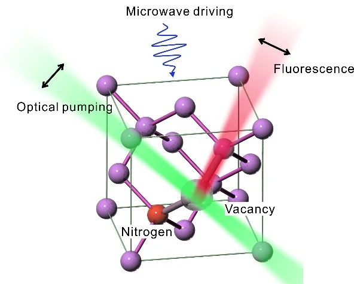
Research overview
Measurements at micro- and nanoscales are central to condensed-matter physics, nanoscience and the life sciences. Signals in these settings are often highly localized, extremely weak and sensitive to environmental disturbances.
A nitrogen-vacancy (NV) center consists of a nitrogen impurity next to a vacancy in diamond. Its atomic size, long room-temperature coherence and stable optical properties make it a versatile quantum sensor. Spin-dependent fluorescence provides information about magnetic and electric fields, temperature and strain.
Our research combines optical-field control with qubit manipulation to achieve imaging and sensing beyond the diffraction limit. We improve sensitivity through coherence protection and enhanced fluorescence, and use nanoscale quantum imaging to investigate light–matter interactions, material phase transitions and electronic devices.
Research highlights
Highlight 01
Imaging and controlling solid-state spin qubits at 4.1 nm resolution
Charge-state-depletion (CSD) microscopy uses optical pumping and a tightly focused Laguerre–Gaussian beam to control the charge state of NV centers. With 50 mW of pump power, the method achieved 4.1 nm spatial resolution—approximately one eighty-sixth of the conventional diffraction limit.
The reported resolution was comparable to stimulated-emission-depletion microscopy while requiring about one hundredth of the pump power in that comparison. Infrared-assisted charge-state conversion reduced the required pump power by a further factor of approximately 30, supporting low-power super-resolution imaging and quantum sensing.
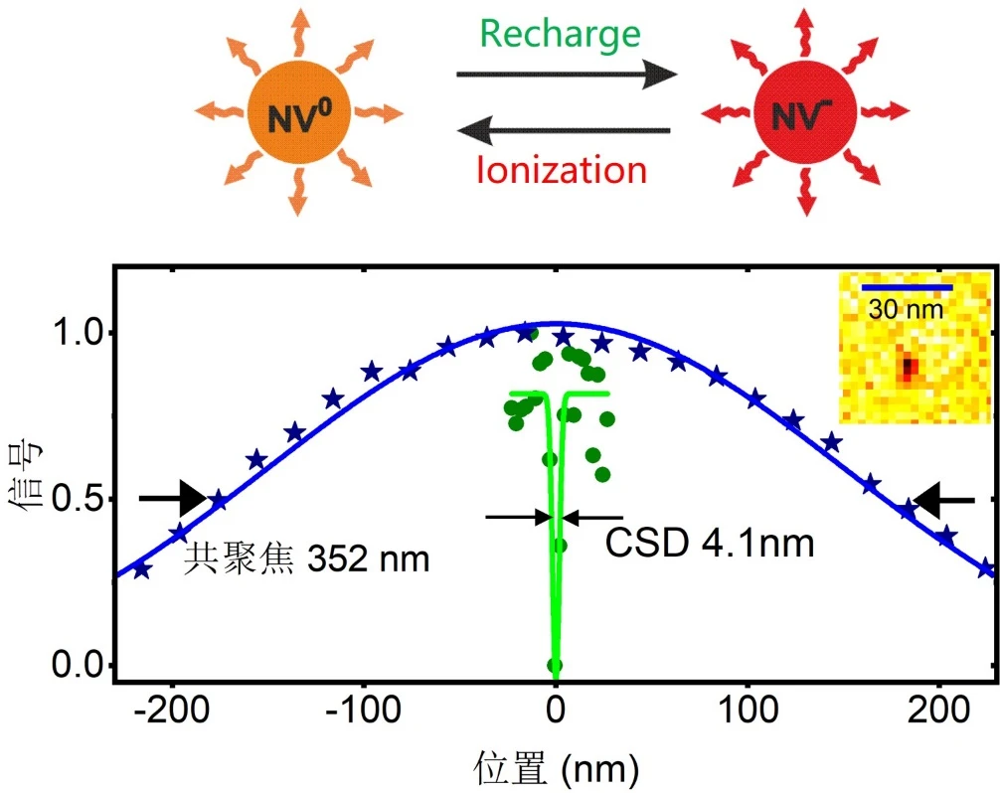
Highlight 02
Electromagnetic-field sensing beyond the diffraction limit
Combining CSD imaging with NV-spin manipulation and readout enabled electromagnetic sensing at 50 nm resolution. A 637 nm doughnut-shaped depletion beam, with controlled power and pumping time, selected NV centers in a region smaller than the optical diffraction limit.
Measurements of one-dimensional nanowires resolved local optical density of states and magnetic fields. The improved spatial resolution clarified signal distributions and revealed weak features, enabling more accurate multimodal characterization of nanoscale optoelectronic devices.
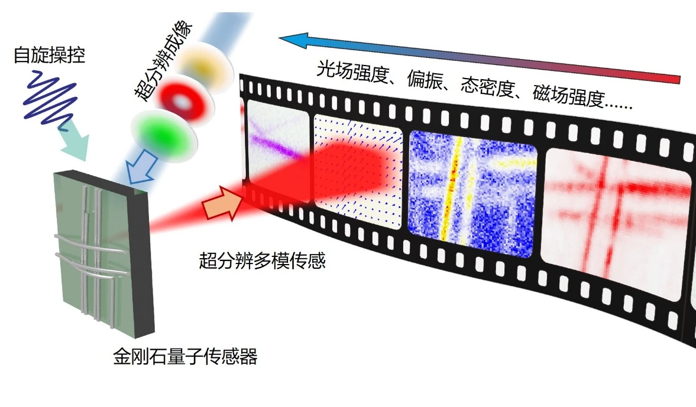
Highlight 03
Resolving electromagnetic confinement at deep-subwavelength scales
Vector microwave-field measurements around a nanowire revealed confinement within approximately 291 nm for a free-space wavelength of 10.4 cm—about one millionth of the wavelength. The field orientation identified near-field radiation from electron motion in the one-dimensional conductor as the origin of this localization.
A metal-nanowire–bowtie-antenna structure subsequently collected and concentrated free-space microwaves. The experiments reported an eight-order-of-magnitude enhancement of local microwave energy and a four-order-of-magnitude increase in spin–field interaction strength.
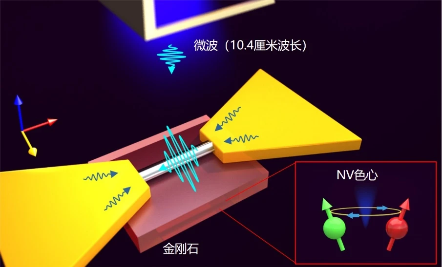
Highlight 04
Quantum-enhanced microwave ranging with diamond sensors
Microwave ranging supports applications including autonomous driving, health monitoring and geological exploration. A hybrid antenna combining a diamond spin sensor with metal nanostructures converts weak free-space signals into strongly localized electromagnetic fields, improving microwave detection sensitivity by three to four orders of magnitude.
Detecting reflected microwaves provides position information. Coherent interaction between the solid-state spin probe and microwave photons enabled quantum-enhanced position precision at the 10 μm scale, approximately one ten-thousandth of the wavelength.
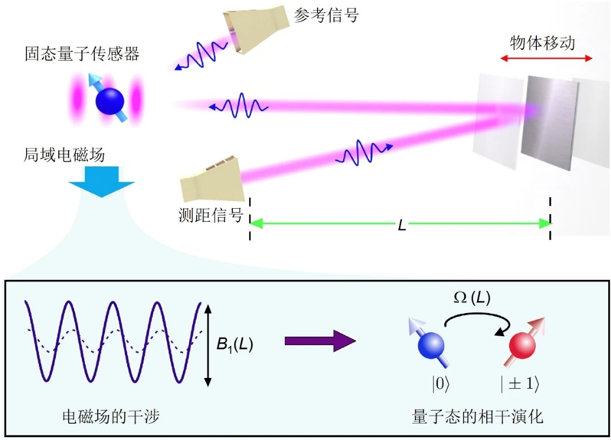
Highlight 05
Quantum imaging of material phase transitions and artificial synapses
Vanadium dioxide (VO₂) undergoes an insulator–metal transition near 68 °C and can be used in devices that emulate neural behavior. NV-center arrays imaged magnetic fields associated with local conductive filaments produced by photothermal excitation, revealing how the transition depends on temperature, current and illumination.
Adjusting the pump position and intensity controlled the conductive filaments. Direct quantum imaging of the device’s electrical behavior also demonstrated a memory effect in a VO₂ artificial synaptic device, supporting research on neuromorphic electronics.
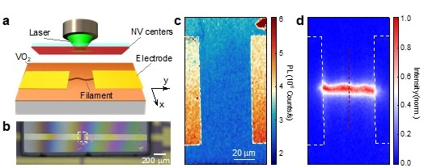
From quantum principles to practical sensors
Practical quantum sensing must balance six key performance measures:
- Sensitivity
- The smallest change that can be detected.
- Accuracy
- How closely a measurement agrees with the true value.
- Dynamic range
- The span between the smallest and largest measurable signals.
- Sampling rate and bandwidth
- The ability to follow rapid, time-dependent signals.
- Spatial resolution
- The smallest spatial variation that can be distinguished.
- Robustness
- Reliable operation amid environmental changes and interference.
Optical diffraction, Nyquist sampling, quantum measurement limits and photon shot noise impose trade-offs between these measures. Our approach combines quantum physics, engineering and computation. Laser and microwave control of NV-center spins provides a room-temperature platform for measuring magnetic fields, temperature, electric fields and strain.
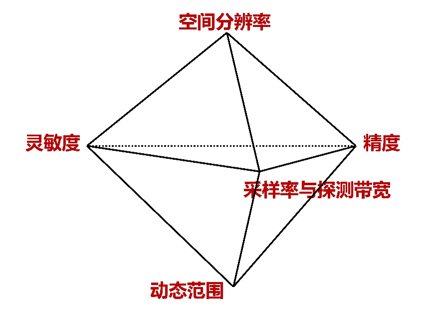
Highlight 06
Enhancing NV-center sensing with quantum correlations
Entangled probes can, in principle, improve precision from the independent-probe scaling of 1/√N toward the Heisenberg scaling of 1/N. Environmental noise can remove this advantage. In diamond, slowly varying nuclear-spin noise has memory, allowing coherence to be recovered through controlled electron-spin evolution and dynamical decoupling.
The theoretical results described on the source page predict precision scaling proportional to N^(−11/12) for Gaussian noise spectra with second-order dynamical decoupling, and N^(−5/6) for Lorentzian spectra with first-order decoupling. Suppressing non-Markovian noise can therefore preserve much of the benefit of quantum correlations.
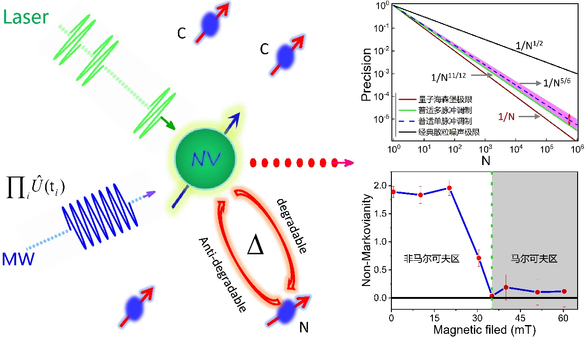
Highlight 07
Evaluating and optimizing quantum-sensing pulse sequences
Multipulse dynamical-decoupling sequences, including CPMG, XY4 and KDD, enable sensitive measurements by encoding a signal in the sensor’s quantum phase. Imperfect pulses can reduce sensitivity and introduce spurious signals.
An evaluation function relates the measured sensitivity to the sensor’s intrinsic sensitivity and helps diagnose control errors. It guides the optimization of pulse phases and durations to improve fidelity and robustness in practical sensing experiments.
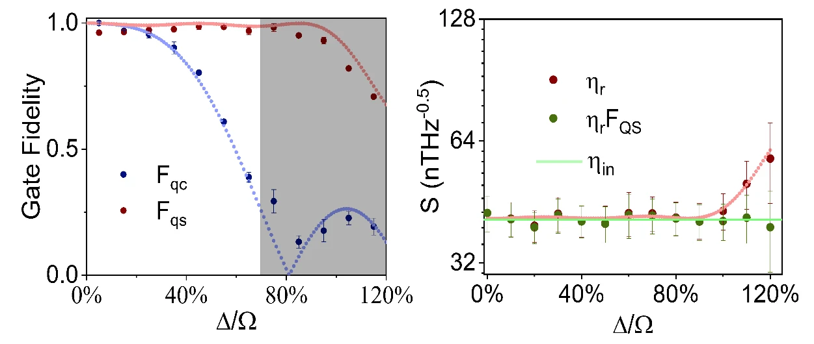
Highlight 08
Demonstrating entanglement-enhanced magnetic measurements
Quantum brachistochrone equations were used to shorten the paths of nonadiabatic geometric quantum gates. Experiments in the three-level ground-state manifold of a diamond NV center reduced average gate-operation times by more than 20% relative to the earlier protocol while maintaining high fidelity.
The resulting gate set prepared a maximally entangled two-spin state through magnetic coupling. Its magnetic-field response was twice that of the fully separable state in the experiment, exceeding the independent-probe measurement limit. Faster entanglement preparation also reduced measurement overhead and improved bandwidth.
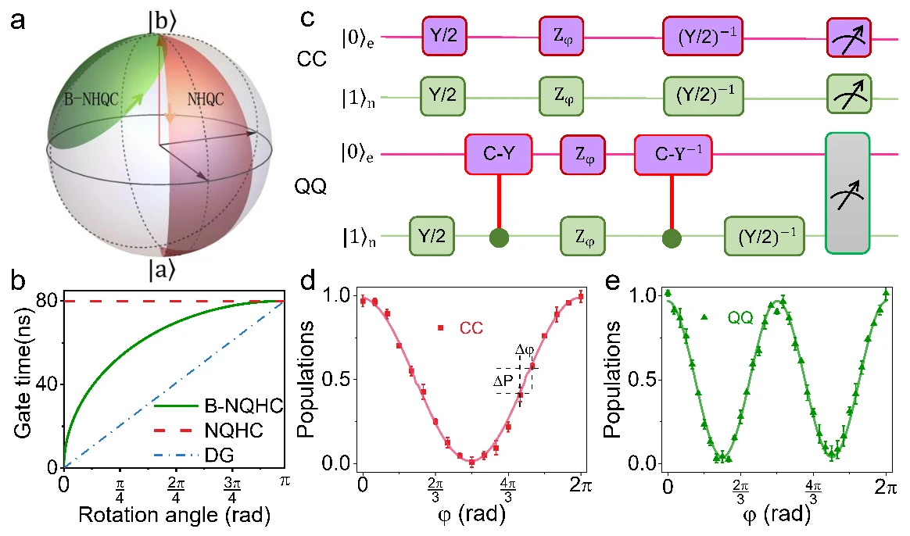
Highlight 09
Extending interferometric dynamic range with Lissajous curves
The 2π periodicity of an interferometric signal normally couples high sensitivity to a limited unambiguous measurement range. Combining two sensing sequences into an extended-period Lissajous curve expanded the maximum magnetic-field measurement range by two orders of magnitude.
The reported method preserved sensitivity and bandwidth when sufficient measurement time was available. It also measured time-dependent periodic waveforms and displayed Heisenberg-like precision scaling within the coherence window, offering a general approach for phase-wrapped quantum interferometers.
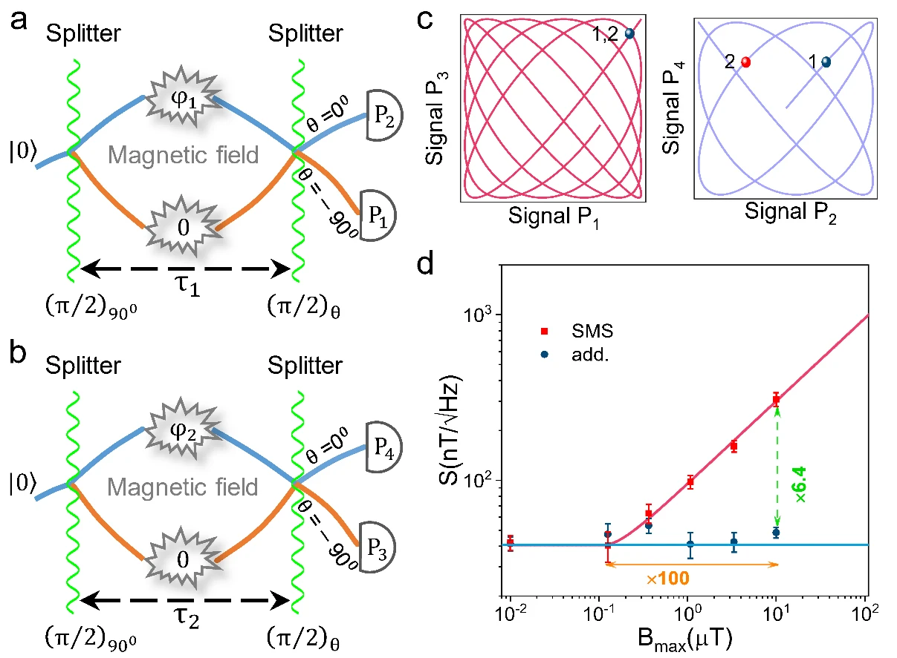
Highlight 10
A sensitive, broadband fiber-coupled diamond magnetometer
A fiber quantum magnetometer operating on a scale of hundreds of micrometers achieved magnetic-field sensitivity of 103 pT/√Hz and a bandwidth of 2.6 kHz by tracking pulsed optically detected magnetic resonance.
A silver reflective coating increased fluorescence collection and optical excitation efficiency. The source describes projected improvements to 50 pT/√Hz and 4.1 kHz; these are distinguished from the demonstrated values above. The compact probe was used to map magnetic fields generated by a current-carrying copper-wire network.
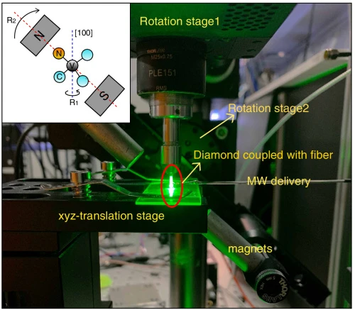
Highlight 11
A robust NV-center fiber quantum thermometer
The fiber thermometer tracks the sharp dip in the zero-field optically detected magnetic-resonance spectrum of a dense NV-center ensemble. This readout suppresses unwanted contributions from magnetic fields and microwave-power drift while improving temperature sensitivity.
With a reported sensitivity of 18 mK/√Hz, the sensor was used to image temperature across an electronic chip’s surface. Its simple, compatible architecture supports temperature measurements in environments where several physical quantities vary simultaneously.
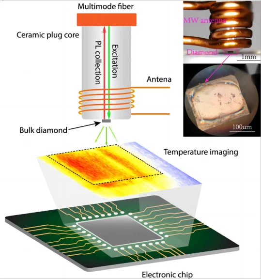
English research description synchronized with the Chinese source on 29 October 2026. Read the Chinese source